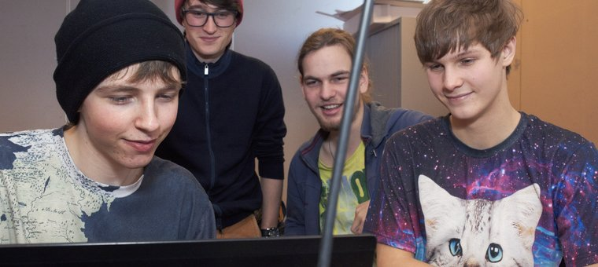

De opleiding
Wat leer je?
De opleiding Mediamanager is een veelzijdige opleiding. Naast de lessen waarin je veel kennis opdoet over marketing, projectmanagement en mediaproductie, zijn er projecten waarin je met medestudenten en studenten van andere opleidingen samenwerkt aan bijvoorbeeld een evenement, AV-productie of magazine. Door de veelzijdige lessen en opdrachten krijg je een compleet beeld van de beroepspraktijk.
Een greep uit de lesopdrachten: collegetours organiseren met gasten uit de verschillende mediasectoren, je eigen magazine en AV-productie maken, een schoolevenement organiseren, een game in de markt zetten. Zo leer je op allerlei gebieden wat er komt kijken bij het werk van een mediamanager.
Na de opleiding Mediamanager kun je als junior medewerker aan de slag bij bijvoorbeeld een AV-productiebedrijf, de reclamebranche, een (multi)mediabedrijf, designstudio of evenementenbureau.

Als je stressbestendig, flexibel en leergierig bent, is de opleiding Mediamanager misschien iets voor jou. Die eigenschappen gebruik je om vragen te stellen, onderwerpen uit te zoeken en door te gaan tot je een antwoord hebt. Want als mediamanager kun je niet alles weten, maar je kunt wél de juiste vragen stellen. Daarnaast zijn goede communicatieve eigenschappen ook belangrijk omdat je met veel partijen contact hebt. Je bent een teamspeler die samen met de betrokken professionals de gewenste resultaten weet te boeken. Verder ben je klantgericht en kostenbewust. En natuurlijk ben je als mediamanager op de hoogte van de nieuwste ontwikkelingen in de mediabranche.